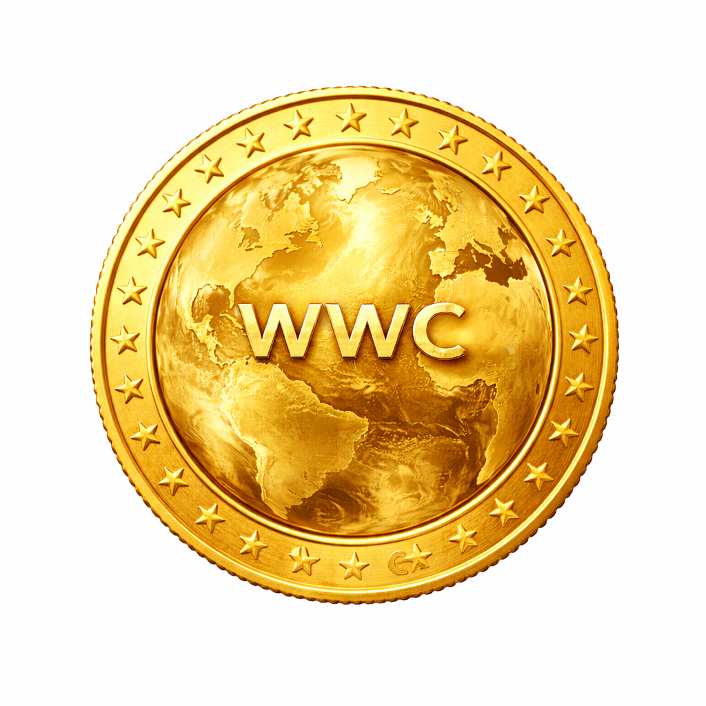

WorldWideCoinWorldWideCoin operates under a fully transparent, mining-only distribution framework. There are no founder allocations, no premine reserves, and no public or private token sales. Supply enters circulation exclusively through decentralized Proof-of-Work validation, ensuring that every coin is earned rather than pre-assigned. WWC is designed to be CPU-friendly, enabling participation from standard personal computers without requiring specialized ASIC hardware. This lowers entry barriers, reduces centralization risk, and allows broader global participation in securing the network. The 2.5% continuous annual emission decay model provides a predictable and gradual reduction in block rewards, avoiding disruptive halving shocks. This structure supports sustained network security while reinforcing controlled and transparent monetary expansion. WWC is architected to promote decentralized global participation, long-term incentive alignment, and resilient economic sustainability — creating a mining ecosystem accessible to individuals worldwide, not limited to industrial-scale operators.
Read Technical WhitepaperWWC implements a 2.5% annual continuous exponential emission decay model, targeting an asymptotic supply near 21 million coins. The protocol ensures smooth emission reduction without disruptive halving shocks while preserving long-term miner incentives.
No premine. No ICO. Fair issuance through CPU-based Proof-of-Work.
Smooth emission reduction without disruptive halving events.
Transaction fee burning introduces long-term deflationary pressure.
Sustainable ecosystem funding without centralized premine control.
Review the complete technical specification and economic framework of WorldWideCoin.